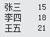

IEnumerable是可枚举的所有非泛型集合的基接口， IEnumerable包含一个方法GetEnumerator()，该方法返回一个IEnumerator；IEnumerator提供通过Current属性以及MoveNext()和Reset()方法来循环访问集合的功能。
公开枚举数，该枚举数支持在非泛型集合上进行简单迭代。接口源码如下：
public interface IEnumerable
{
[DispId(-4), __DynamicallyInvokable]
IEnumerator GetEnumerator();
}支持对非泛型集合的简单迭代。接口源码如下：
public interface IEnumerator
{
[__DynamicallyInvokable]
bool MoveNext();
[__DynamicallyInvokable]
object Current { [__DynamicallyInvokable] get; }
[__DynamicallyInvokable]
void Reset();
}示例演示了通过实现IEnumerable和IEnumerator接口来循环访问自定义集合的最佳实践。
定义一个简单的实体类：
public class Person
{
public Person(string name, int age)
{
this.Name = name;
this.Age = age;
}
public string Name;
public int Age;
}定义一个实体类的集合，继承IEnumerate：
public class People : IEnumerable
{
private Person[] _people;
public People(Person[] pArray)
{
_people = new Person[pArray.Length];
for (int i = 0; i < pArray.Length; i++)
{
_people[i] = pArray[i];
}
}
/// <summary>
/// GetEnumerator方法的实现
/// </summary>
/// <returns></returns>
IEnumerator IEnumerable.GetEnumerator()
{
return GetEnumerator();
}
public PeopleEnum GetEnumerator()
{
return new PeopleEnum(_people);
}
}定义一个枚举器，继承IEnumerator：
public class PeopleEnum : IEnumerator
{
public Person[] _people;
/// <summary>
/// 枚举器位于第一个元素之前直到第一个MoveNext（）调用。
/// </summary>
private int position = -1;
public PeopleEnum(Person[] list)
{
_people = list;
}
public bool MoveNext()
{
position++;
return position < _people.Length;
}
public void Reset()
{
position = -1;
}
object IEnumerator.Current => Current;
public Person Current
{
get
{
try
{
return _people[position];
}
catch (IndexOutOfRangeException)
{
throw new InvalidOperationException();
}
}
}
}具体调用：
Person[] peopleArray = new Person[3]
{
new Person("张三", 15),
new Person("李四", 18),
new Person("王五", 21),
};
People peopleList = new People(peopleArray);
foreach (Person p in peopleList)
Console.WriteLine(p.Name + "\t" + p.Age);输出：

其中，上边调用中foreach等价于
IEnumerator enumeratorSimple = peopleList.GetEnumerator();
while (enumeratorSimple.MoveNext())
{
Person p = enumeratorSimple.Current as Person;
Console.WriteLine(p?.Name + "\t" + p?.Age);
}通过例子，可以得出：
IEnumerable代表继承此接口的类（比如ArrayList，IList，List<T>等）可以获取一个IEnumerator来实现枚举这个类中包含的集合中的元素的功能，是 .NET Framework 中最基本的集合访问器。在编程中，Lambda表达式通过Select()或者Where()返回的变量为IEnumerate<T>,此时我们可以通过foreach遍历。希望本文对你有所帮助，下一篇介绍Lambda中的Select和Where，感兴趣的朋友可以加关注，欢迎留言交流！